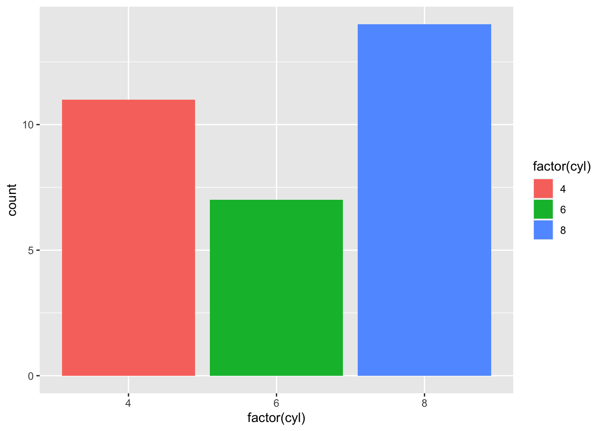
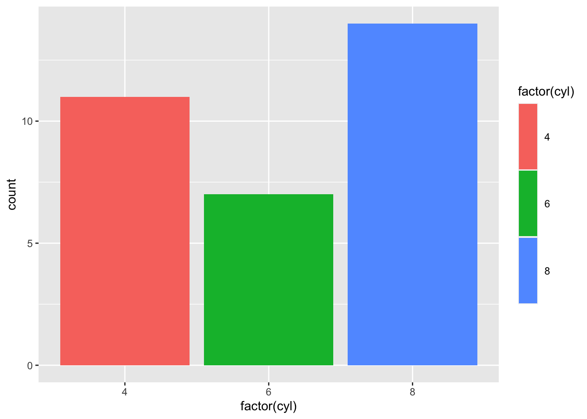
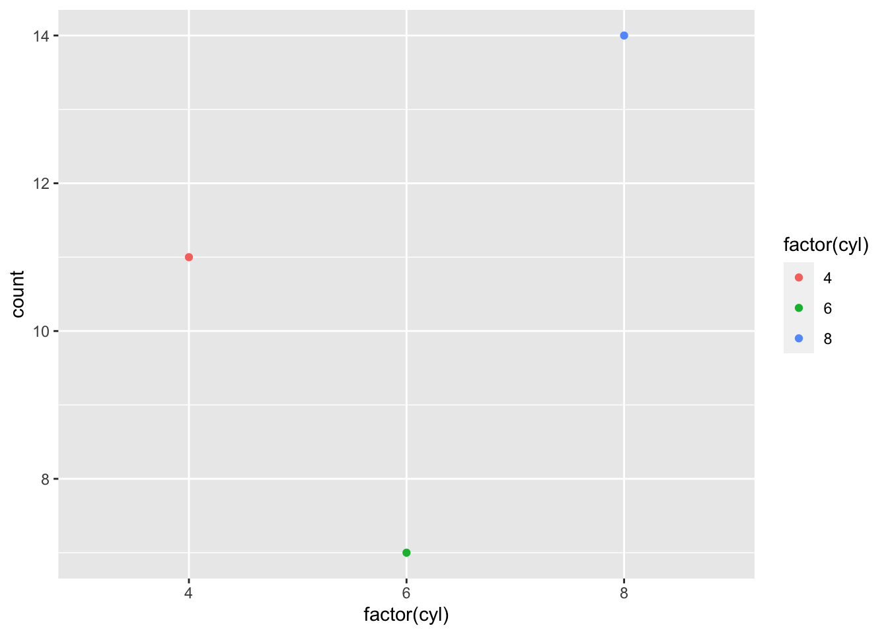
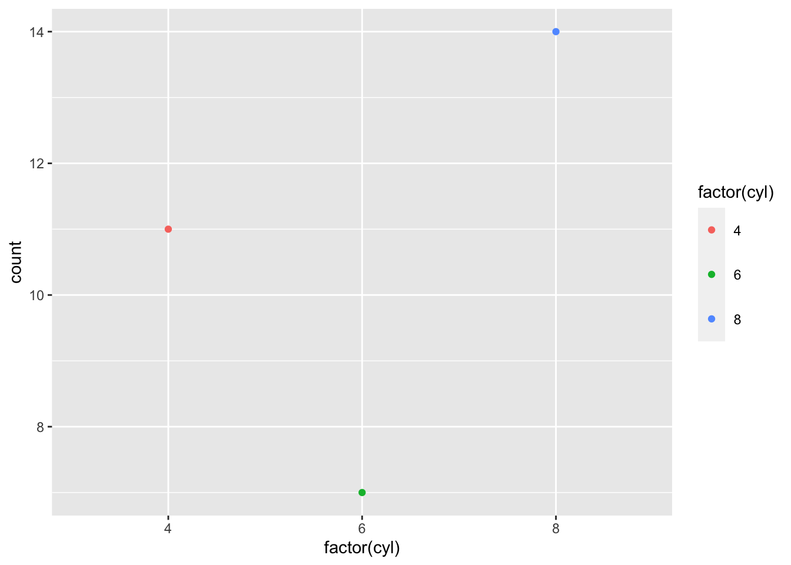
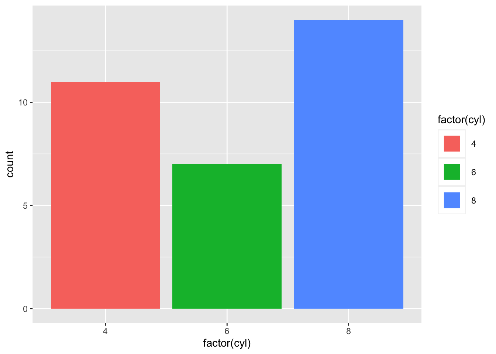

今天看到有人在讨论如何修改ggplot2中垂直square legend之间的距离.原来想着ggplot2中的theme函数的legend.key.height参数不就是来控制这个距离的吗?后来试了一下,还真的不行.
先画出图来:
library(ggplot2)
ggplot(mtcars, aes(x = factor(cyl))) +
geom_bar(aes(fill = factor(cyl)))
使用legend.key.height参数来设置:
ggplot(mtcars, aes(x = factor(cyl))) +
geom_bar(aes(fill = factor(cyl))) +
theme(legend.key.height = unit(4, "line"))
可以看到每个key变高了,但是距离并没有变化.我们试试其他类型的legend,比如point.
ggplot(mtcars, aes(x = factor(cyl))) +
geom_point(aes(colour = factor(cyl)), stat = "count")
ggplot(mtcars, aes(x = factor(cyl))) +
geom_point(aes(colour = factor(cyl)), stat = "count") +
theme(legend.key.height = unit(10, "mm"))
从这幅图看的就非常的清楚了,每个legend的图像元素是由key(背景)和指示元素组成的.legend.key.height参数可以改变key的高度,而指示元素则处在key的中间,对于square legend来说,他们其实是和key背景重合的,所以legend.key.height没有办法改变他们之间的距离.
那如果确实有需要更改这个距离,怎么做呢?想到一个办法只能更改square指示元素的line的宽度(line颜色为白色),从而间接修改他们之间的距离.
ggplot(mtcars, aes(x = factor(cyl))) +
geom_bar(aes(fill = factor(cyl)))
ggplot(mtcars, aes(x = factor(cyl))) +
geom_bar(aes(fill = factor(cyl))) +
theme(legend.key.size = unit(2, "line")) +
guides(fill = guide_legend(override.aes = list(size = 3, colour = "white")))
欢迎大家由其他办法的留言讨论.